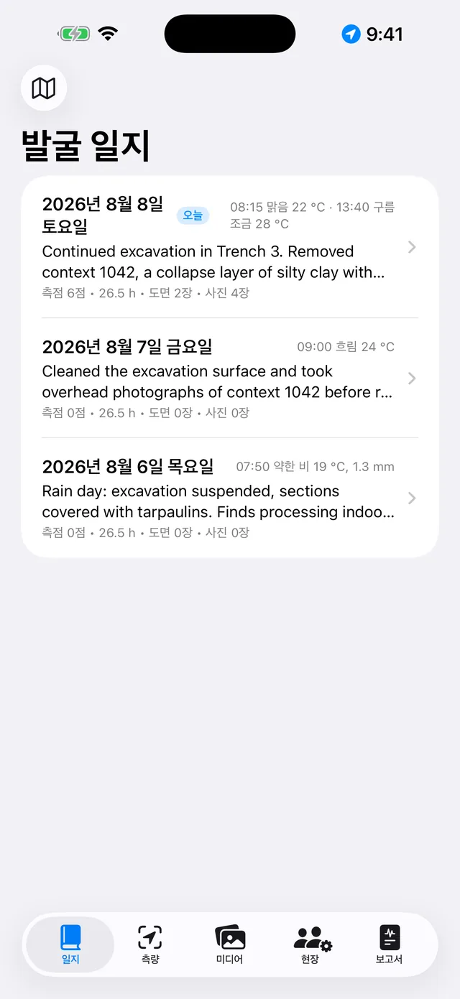
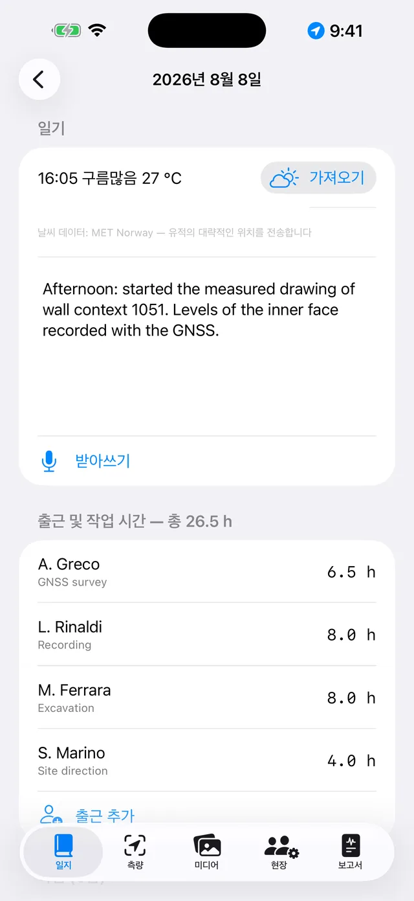
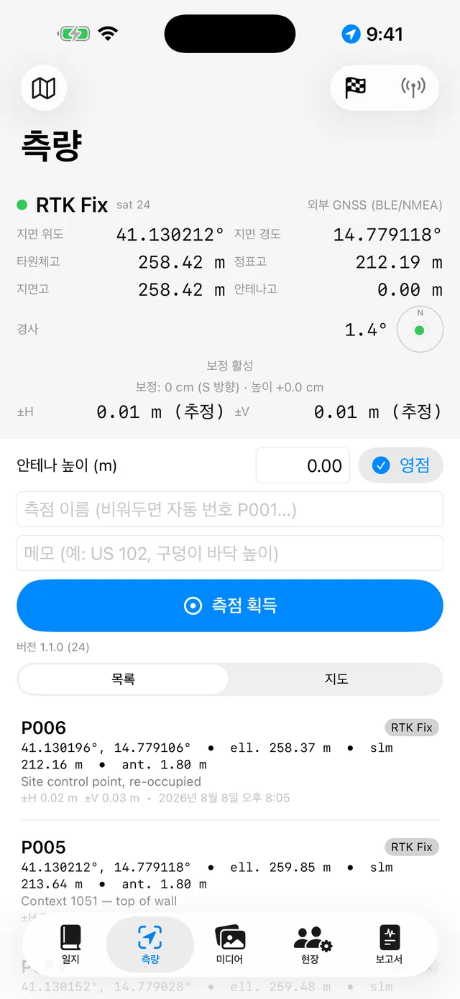
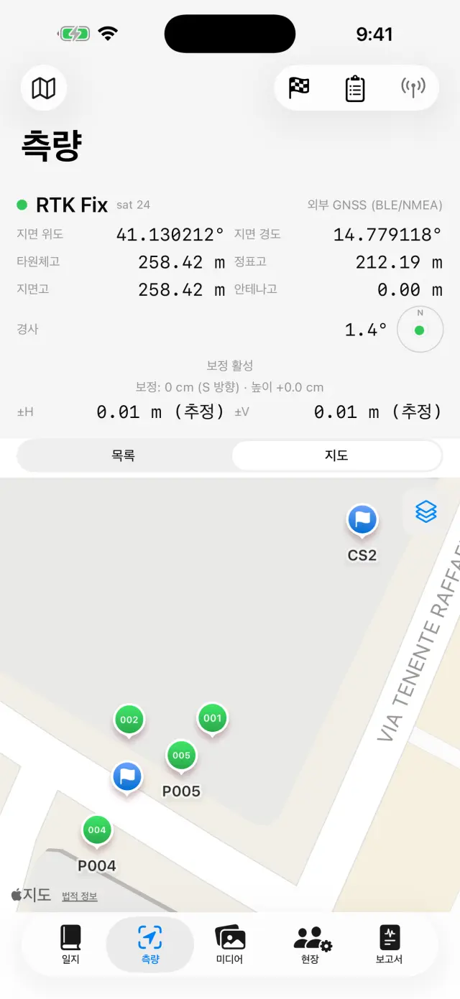
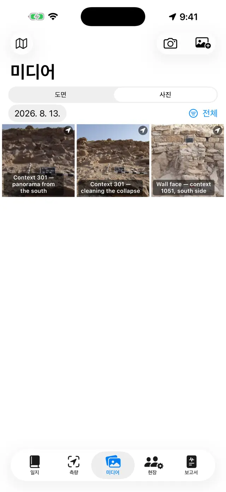
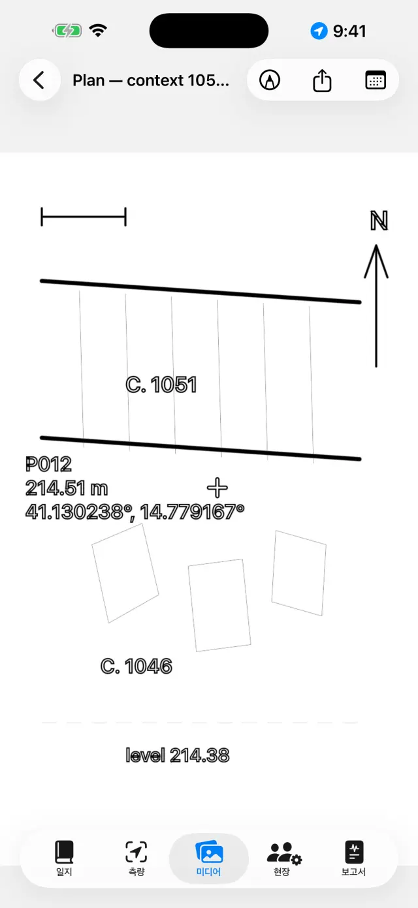
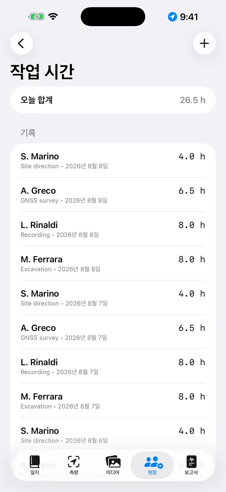
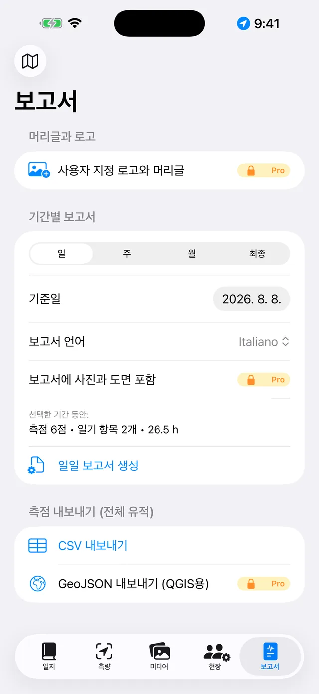

iPhone와 iPad를 위한 디지털 발굴 일지입니다. 100% 오프라인으로 작동하며, 데이터는 항상 기기에만 저장됩니다.
한마디로
생각은 하나뿐입니다. 발굴하는 하루하루가 하나의 페이지가 되
어 스스로 채워집니다. 기록은 각자 있어야 할 곳에 남깁니다 — 측량에서 GNSS 측점
을, 미디어에서 사진을, 현장에서 작업 시간을 — 그러면 그날의 페이지가
일지에서 이를 모두 자동으로 모아 줍니다. 주말이나 발굴이 끝날 때가
되면 보고서는 이 페이지들로부터 저절로 만들어집니다.
전형적인 하루
아침그날의 페이지를 열고 날씨와 일기를 기록합니다 (받아쓰기로 말해서 입력할 수도 있습니다)
출근현장에서 출근한 사람과 시간을 기록합니다
측량GNSS 측점을 획득합니다. RTK를 사용한다면 먼저 기준점을 점검합니다
사진미디어에서 촬영합니다. 좌표가 자동으로 첨부됩니다
도면사진 위에 단면도나 평면도를 따라 그립니다 (디지털 트레이싱지)
저녁보고서 탭에서 일일 보고서를 생성합니다. 바로 보낼 수 있는 PDF가 만들어집니다
시작하기
처음 실행하면 예시 유적이 이미 준비되어 있습니다. 나만의 유적을 만들려면
상단의 유적 이름 (🗺 아이콘)을 탭한 다음 새 유적…을 선택
하고 이름을 지정합니다 (예: "Colle Sant'Angelo — 트렌치 3").
현재 활성화된 유적 이름은 항상 상단에 표시되며, 모든 탭에 해당 유적의 데이
터가 표시됩니다. 유적을 전환하려면 이름을 다시 탭하세요.
요청 시 다음 권한을 허용하세요: 위치 (측점을 위해), 카메
라 (사진을 위해), 마이크 (받아쓰기를 위해), 블루투스
(외부 수신기를 사용하는 경우에만).
다섯 개의 탭
📓 일지
특정 날짜를 탭하면 해당 페이지가 열립니다. 그날의 일기, 날씨, 출근, 측점,
사진, 도면이 이미 모여 있습니다.
날씨는 직접 입력할 수도 있고 (예: "맑음, 28°C, 약한 바람"), 가져오
기를 탭해 노르웨이 기상청에 현재 날씨를 문의할 수도 있습니다. 가져오려면
네트워크가 필요하며 오늘 날짜에서만 작동합니다. 어제의 날씨는 더 이상 가져올
수 없습니다. 오후에 한 번 더 탭하면 기록이 하나 더 추가됩니다. 직접 입력한 내
용이 항상 우선합니다.
가져오기를 실행하면 외부로 전송되는 것은 약 11미터 단위로 반올림된 대략적
인 위치뿐이며, 보고서에서는 이 줄이 보고서 언어로 표시됩니다.

발굴일 목록

하루의 페이지
📍 측량
상단 패널에 실시간 위치가 표시됩니다: 좌표, 높이, 정확도, Fix 유형 (GPS /
RTK Float / RTK Fix).
폴을 사용한다면 안테나 높이 (m)를 설정하세요. 측점의 높이가 자
동으로 지면 기준으로 환산됩니다.
측점 획득을 탭합니다. 이름은 자동으로 번호가 매겨지지만 (P001,
P002…), 직접 이름을 입력할 수도 있습니다 (예: "US 102 — 바닥 높이"). 메모도
추가할 수 있습니다.
목록과 지도를 전환하면 측점을 실제 위치에서 확인할
수 있습니다. 지도에서는 지적도나 다른 WMS 서비스를 활성화할 수 있습니다.
기준점 (🏁)에는 전용 섹션이 있습니다. CSV로 가져오거나 직접 만든 다음, 측
량하기 전에 점검 기능으로 Δ북/Δ동/Δ표고 편차를 실시간으로 확인하세요.

측량의 GNSS 패널

지도의 측점과 기준점
각 측점은 두 가지 높이를 모두 저장합니다: 타
원체고와 정표고. 휴대폰 내장 GPS를 사용하면 정표고를 사용할 수 없는 경우가 있
으며, 이때는 외부 수신기가 필요합니다 (아래 참조).
📷 미디어
카메라 버튼으로 촬영하거나 사진 보관함에서 가져옵니다.
사진은 자동으로 번호가 매겨지며 (F001, F002…), 사용 가능한 가장 최근의
GNSS 위치로 위치 정보가 태그됩니다.
사진을 탭하면 제목과 메모를 설정할 수 있습니다 (예: "US 102, 북쪽에서 촬
영").

사진 갤러리
✏️ 도면 (미디어 내)
새 도면을 만들고 유적 사진을 배경으로 선택하세요. 이것이 여러분의 디지털
트레이싱지입니다.
손가락이나 Apple Pencil로 층, 절단면, 돌을 따라 그립니다. 사진의 불투명도
를 조절하면 선을 더 잘 볼 수 있습니다.
라벨용 텍스트 상자 (예: "US 1002")와 방위표(북쪽 화살표)를 추가합니다.
완료되면 사진을 숨기세요. 깔끔한 도면만 남아 보고서에 바로 사용할 수 있습
니다.

디지털 트레이싱지
👷 현장
그날의 출근을 기록합니다: 각 인원의 성명, 직무, 작업 시간입니다.
장비 목록과 각 장비의 담당자를 관리하세요.

출근 및 작업 시간
📄 보고서
유형을 선택하세요: 일일 (무료, 워터마크 포함),
주간, 월간, 또는 전체 부록이 포함된
최종 보고서 PRO.
보고서 언어는 14개 언어 중에서 선택할 수 있으며, 앱 언어
와는 별개입니다. 앱을 한국어로 사용하더라도 보고서는 독일어로 만들 수 있습니
다.
PDF를 생성하거나, 로고와 사진이 포함된 DOCX PRO,
측점 CSV, QGIS용 GeoJSON PRO으로 내보낼 수 있습니다.

보고서 생성
외부 GNSS 수신기와 NTRIP
외부 수신기 (센티미터급 안테나)를 사용하면 앱이 RTK 정확도에 도달합니다. 내
장 GPS는 항상 대체 수단으로 사용할 수 있습니다.
수신기 전원을 켜고 휴대폰의 블루투스를 활성화하세요.
측량에서 위치 소스를 선택하세요: 외부 GNSS
(BLE/NMEA)PRO를 선택하고 목록에서 수신기를 선
택합니다. MFi 수신기 (무료)와 네트워크로 NMEA를 전송하는 수신기도 지원됩니다.
RTK 보정을 위해 NTRIP을 설정하세요: Caster 주소, 포트,
Mountpoint, 사용자 이름, 비밀번호 (기기의 키체인에 저장됩니다). 앱이 위치를
Caster로 전송하고 보정 데이터를 수신합니다.
RTK Fix로 전환될 때까지 기다리세요: 센티미터급 정확도입
니다. 시작하기 전에 기준점에서 점검하세요.
백업 및 교환
유적 메뉴에서 유적 내보내기 (.zip)를 탭하세요. 그 안에는 모든
것이 들어 있습니다 — 일지, 측점, 사진, 도면, 작업 시간, 기준점입니다.
이 ZIP 파일은 원하는 곳에 보관하세요 (파일 앱, Drive, 이메일 등). 이것이
백업입니다. 이 앱은 의도적으로 클라우드를 사용하지 않습니다.
유적 가져오기 (.zip)…는 다른 기기에서 유적을 다시 만듭니다.
iPhone과 Android 사이에서도 가능합니다.
⚠️ 유적 삭제…는 유적과 그 안의 모든 내용을 삭제하며
되돌릴 수 없습니다. 확신이 서지 않으면 먼저 ZIP을 내보내세요.
무료 버전과 Pro
무료
Pro
유적
1
무제한
GNSS
내장 GPS, MFi 수신기
+ BLE/NMEA, NTRIP
보고서
워터마크 포함 일일 보고서
모두, 워터마크 없음
내보내기
PDF, CSV
+ 로고와 사진이 포함된 DOCX, GeoJSON
음성 받아쓰기
✓
✓
보고서 언어
14
14
Pro는 월간 또는 연간 자동 갱신 구독이거나 일회성 평생 구매입니다. Apple ID
설정에서 언제든지 관리하거나 해지할 수 있습니다.
문제 해결
블루투스 수신기가 표시되지 않거나 연결되지 않습니다
다음 순서로 확인하세요.
수신기가 켜져 있고, 다른 앱이나 다른 휴대폰에 이미 연결되어 있지 않은지;
시스템 블루투스가 켜져 있고 앱에 블루투스 권한이 있는지 (설정 → Giornale
di Scavo);
하늘이 트여 있어야 합니다. 울창한 나무나 가까운 벽은 신호를 약화시킵니
다. 상태가 좋지 않으면 RTK Float (데시미터급)에 머무를 수 있습니다.
가까운 Mountpoint (30~40km 미만) 또는 VRS 네트워크를 선택하세요.
NTRIP가 연결되지 않습니다
주소와 포트(대개 2101)를 확인하고 Mountpoint가 실제로 존재하는지 확인하세
요. 대부분의 Caster는 목록(sourcetable)을 공개합니다.
사용자 이름이나 비밀번호가 틀리면 401/403 오류가 발생합니다. 자격 증명을
다시 확인하세요.
일부 네트워크는 위치 정보(GGA) 전송을 요구합니다. 앱이 자동으로 전송하지
만, 수신기가 먼저 Fix를 확보하고 있어야 합니다.
정표고가 비어 있거나 0입니다
휴대폰 내장 GPS는 타원체고만 제공합니다. 정표고는 외부 수신기의 GGA 문장에
서 얻습니다. 수신기가 없어도 측점에는 타원체고가 저장됩니다.
받아쓰기가 작동하지 않습니다
설정에서 마이크와 음성 인식 권한을 확인하세요.
필사는 기기에서 처리됩니다. 처음 사용할 때 시스템이 언어 모델을 다운로드
해야 할 수 있습니다 (이때만 네트워크가 필요하며, 이후에는 오프라인으로 작동합
니다).
짧은 문장으로 말하세요. 텍스트는 일기의 끝에 추가됩니다.
지적도 (WMS)가 표시되지 않습니다
앱 자체는 오프라인이지만 WMS 레이어는 웹 서비스이므로 네트워크 연결과 작동
중인 서비스가 필요합니다. 이탈리아 지적도는 미리 설정되어 있습니다. 다른 국가
의 경우 해당 국가 공식 서비스의 WMS 엔드포인트를 입력하세요 (EPSG:3857을 지원
해야 합니다). 데이터 통신이 되지 않는 곳에서도 기본 지도와 측점은 계속 표시됩
니다.
사진에 좌표가 없습니다
사진의 위치는 가장 최근의 GNSS Fix에서 가져옵니다. 먼저 측량을 열고 위치가
확정될 때까지 기다린 다음 촬영하세요. 위치 권한이 거부되어 있으면 사진은 좌표
없이 저장됩니다.
보고서에 사진이나 로고가 없습니다
보고서 내 사진, 로고, 맞춤 머리글은 Pro 기능이며 DOCX와 PDF 모두에 적용됩
니다. 무료 일일 보고서에는 워터마크가 있고 사진은 포함되지 않습니다.
실수로 유적을 삭제했습니다
삭제는 최종적이며 데이터는 복구할 수 없습니다 (클라우드가 없습니다). 이전
에 내보낸 ZIP이 있다면 가져와서 그 시점의 유적 상태로 복원할 수 있습니다. 권
장: 매일이 끝날 때 ZIP을 내보내세요.
Pro를 구매했는데 아직 잠겨 있습니다
Pro 화면에서 구매 복원을 탭하세요. 구매할 때 사용한 것과 동일한
Apple ID를 사용해야 합니다. 기기를 변경했다면 복원을 통해 구독이나 평생 라이
선스를 되찾을 수 있습니다.
"가져오기"가 회색으로 표시되거나 "날씨 정보를 사용할 수 없음"이라고 표시됩니다
버튼이 회색으로 표시되어 있다면 지나간 날짜의 페이지를 보고 있는 것입니
다. 날씨는 오늘 날짜에서만 가져올 수 있습니다.
"날씨 정보를 사용할 수 없음"이 표시된다면 네트워크가 없거나, 유적에 위치
를 가져올 GNSS 측점이 아직 없는 것입니다. 측점을 하나 획득한 다음 다시 시도하
세요.